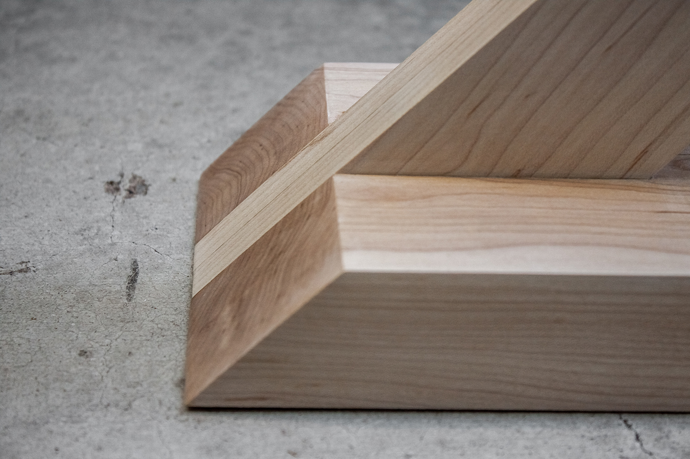
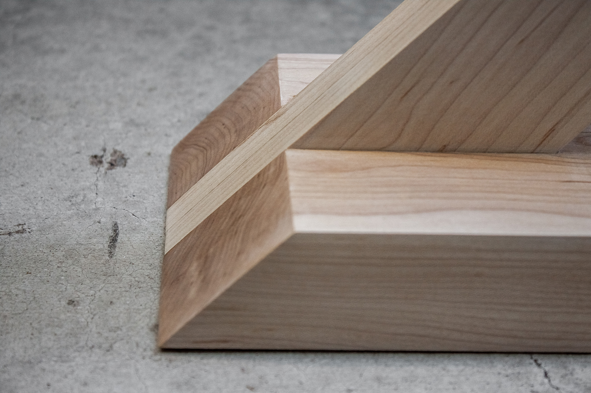

Z Lamp

A maple LED desk lamp.
Hand-crafted desk lamp made from solid hard maple. The goal for this project was to provide warm-toned task lighting in a fixture with a bold, minimalist profile. The design culminated in a tapered, cantilevered arm that houses a recessed LED lighting strip.
The lamp's construction presented several challenging opportunities. Firstly, the design called for the lamp's electrical components to be concealed within its body. This was achieved by routing cavities in two mirrored profiles. Secondly, the connections in the lamp arms were articulated using a contrast of end-grain and long-grain wood, providing an articulation of its unique construction.
 
